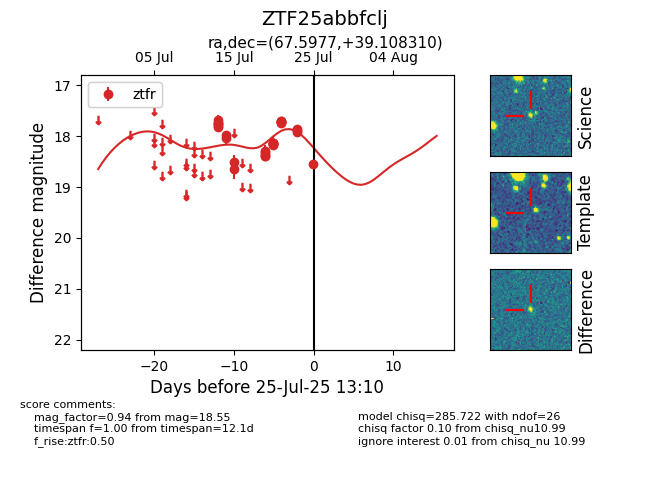

Target ZTF25abbfclj at 2025-08-05 23:02, see:
FINK: fink-portal.org/ZTF25abbfclj
Lasair: lasair-ztf.lsst.ac.uk/objects/ZTF25abbfclj
ALeRCE: alerce.online/object/ZTF25abbfclj
alt names
ZTF25abbfclj (ztf,fink)
coordinates:
equatorial (ra, dec) = (67.5977,+39.10831)
galactic (l, b) = (162.5397,-6.37629)
photometry
last atlaso=18.20, ztfr=18.03
2 atlaso, 49 ztfr detections
